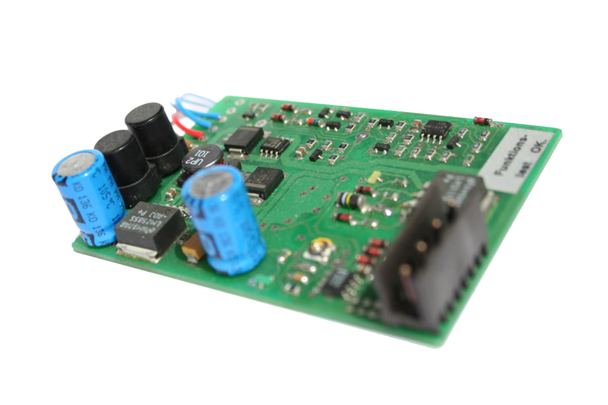
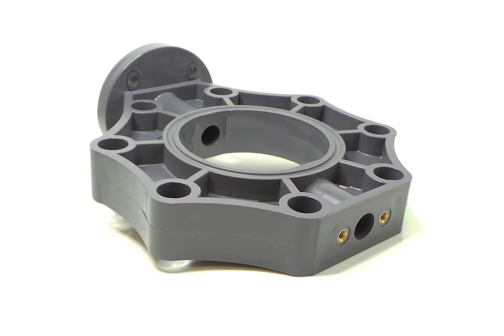
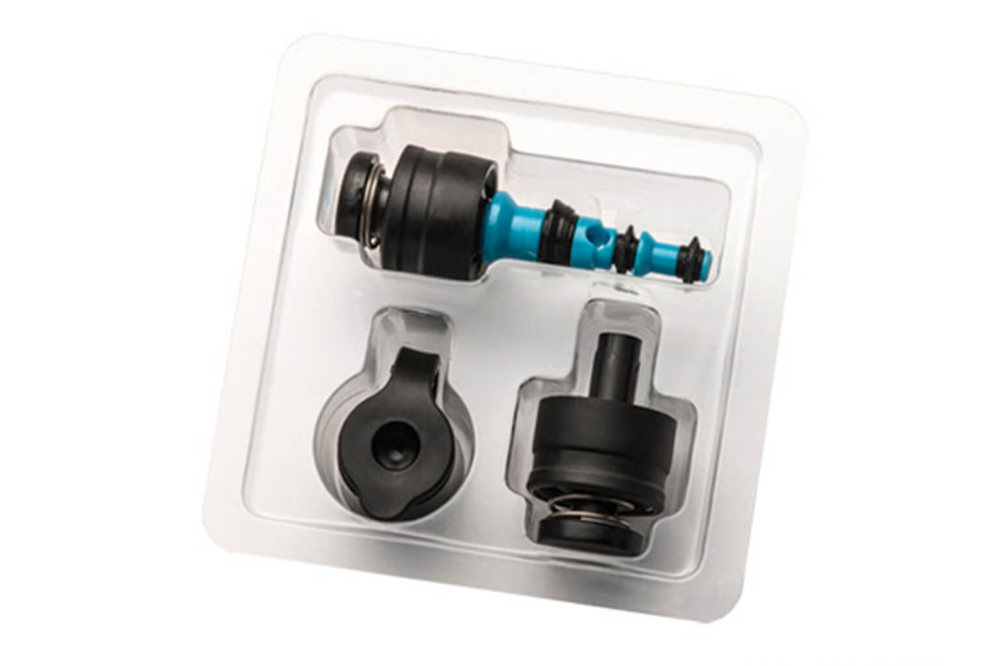

Applications
Trust is good, control is better.
Used successfully by over 750 customers. Together we can deliver the best possible quality at all times.

Electronic assemblies
SMD, THT or mixed assembly - up to a component height of 60 mm or minimum size 01005 and smaller. Series, setup or First Article Inspection.

Circuit boards
After production, in incoming goods, inner or outer layers. You won't miss a thing with the alternating image inspection.

Injection-molded parts
Designed for the most diverse requirements. Find and identify all differences quickly and easily.

Special solutions
Individual special solutions - also for medical technology - are our specialty. Trust is good, control is better.